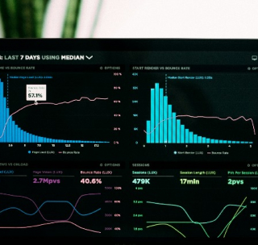

Back to Categories

Proactive Monitoring and Maintenance
Description
Our proactive monitoring and maintenance services ensure the health and performance of your IT infrastructure around the clock. Using advanced monitoring tools, we detect and resolve issues before they impact your business, minimizing downtime and optimizing system performance. With our managed services, you can focus on your core business activities while we take care of your IT needs.